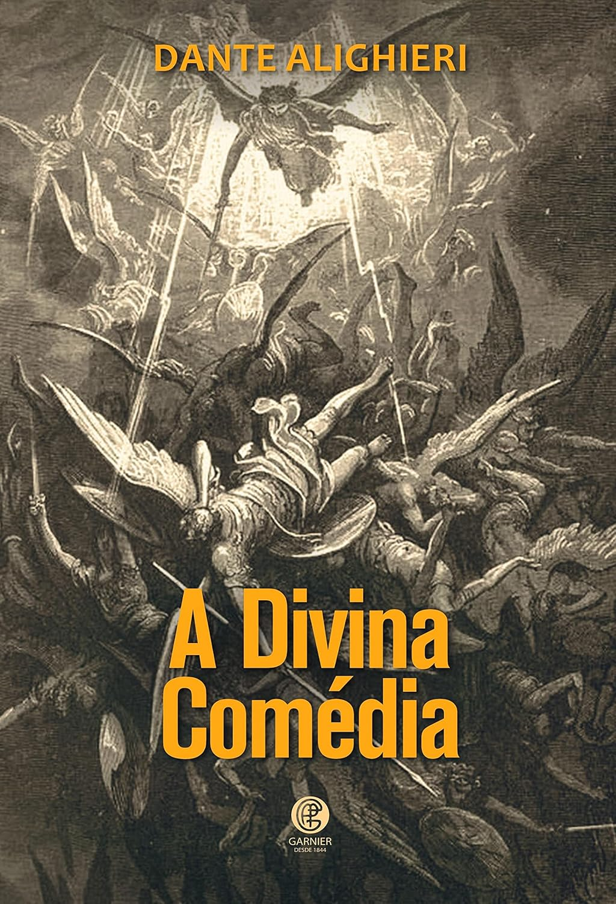
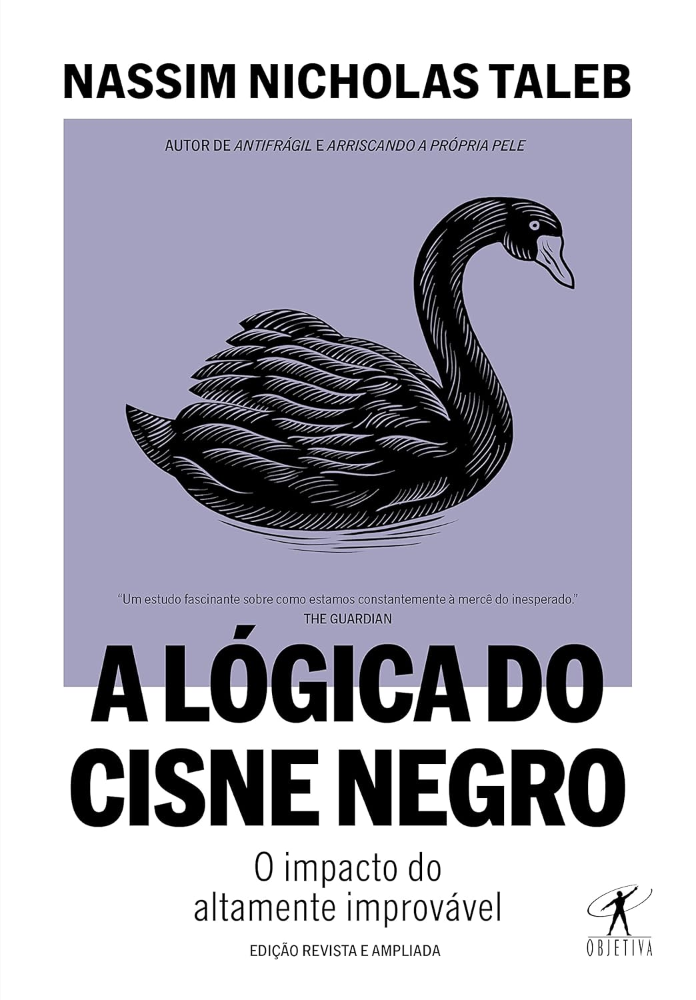
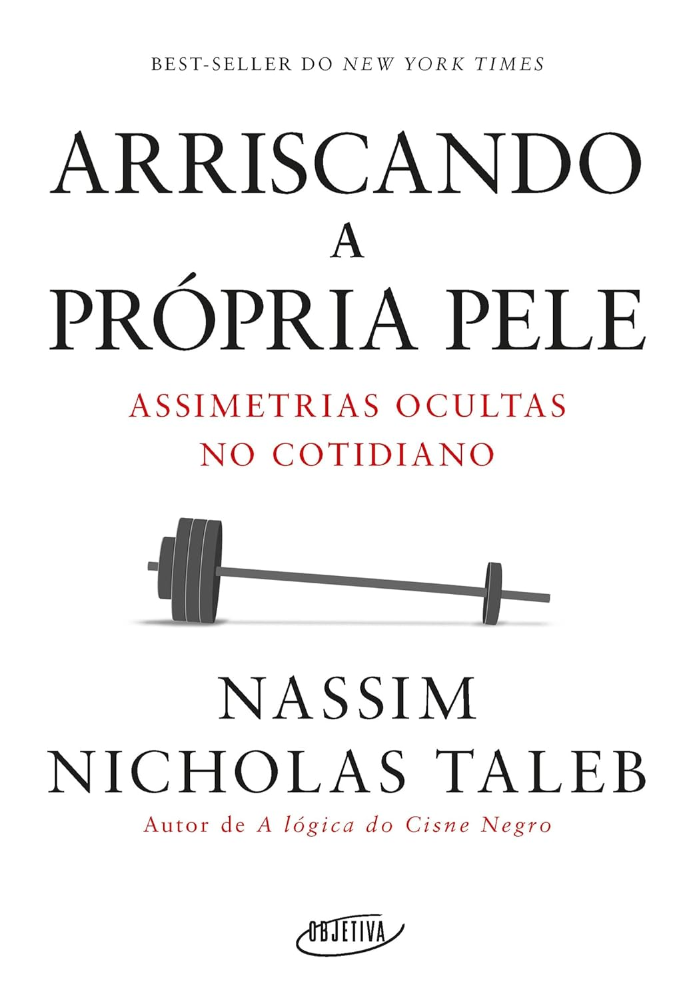
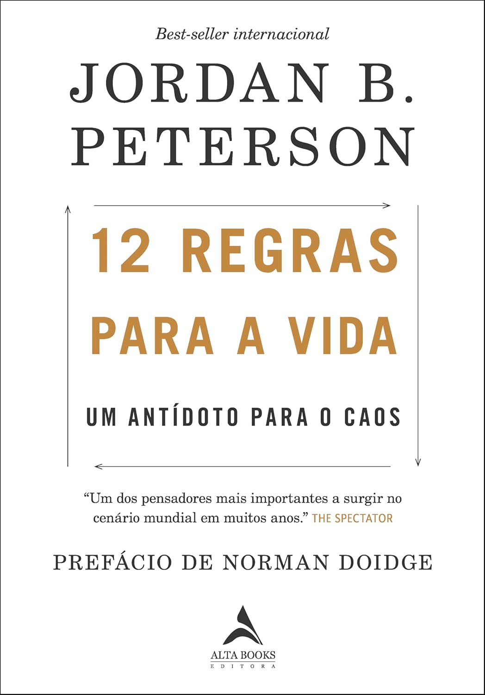
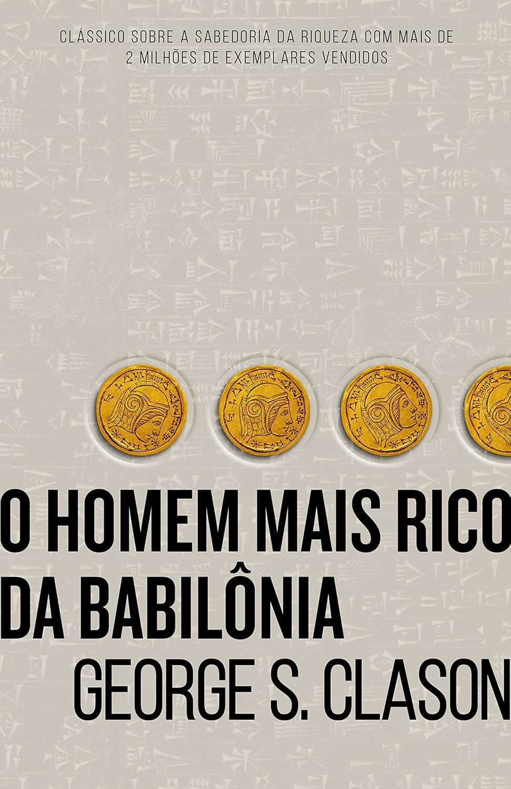
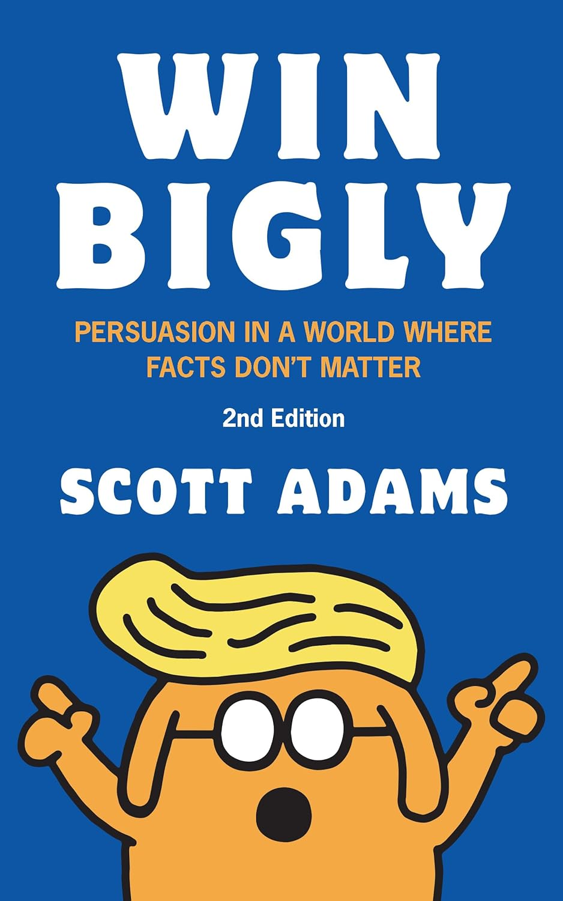
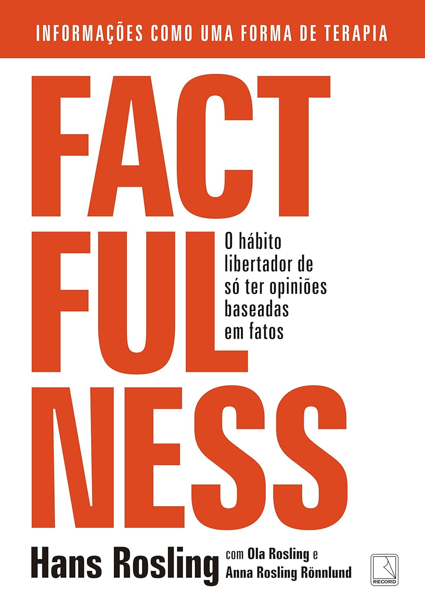
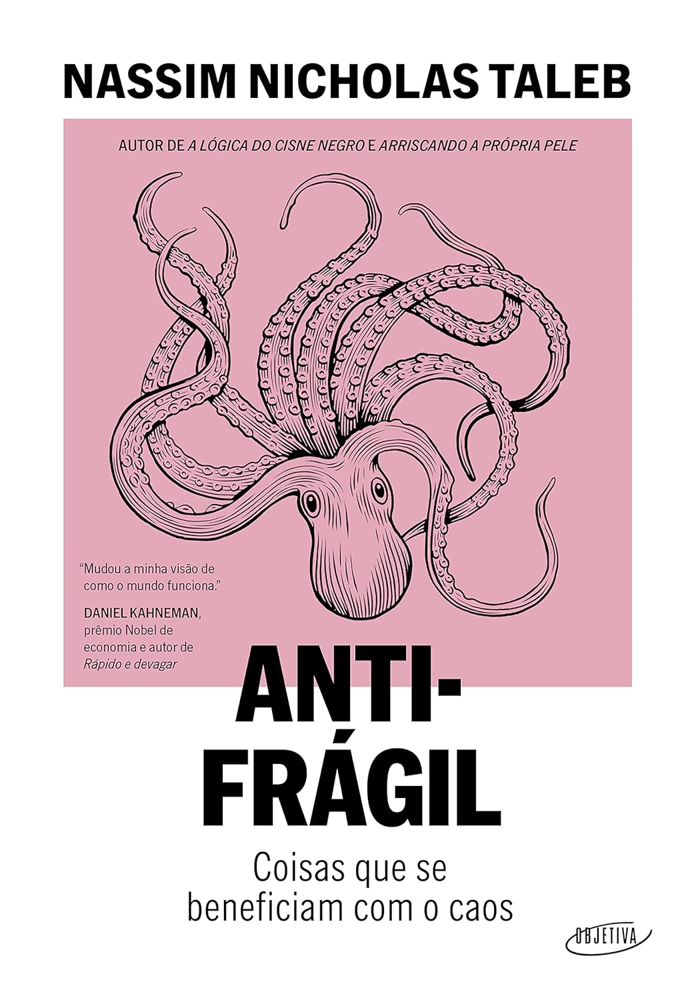

A Divina Comédia
Autor: Dante Alighieri
A obra épica que atravessa Inferno, Purgatório e Paraíso, unindo poesia e filosofia em uma jornada literária que moldou séculos de pensamento e imaginação.
→ Ler resenha completaAqui no Cantinho do Café, cada livro é um convite à pausa e à reflexão. Explore nossas resenhas e descubra histórias, ideias e autores que inspiram.

Autor: Dante Alighieri
A obra épica que atravessa Inferno, Purgatório e Paraíso, unindo poesia e filosofia em uma jornada literária que moldou séculos de pensamento e imaginação.
→ Ler resenha completa
Autor: Nassim Nicholas Taleb
Um dos livros mais influentes do nosso tempo, mostrando como eventos raros, imprevisíveis e de enorme impacto moldam o mundo — e por que não conseguimos prever o futuro.
→ Ler resenha completa
Autor: Nassim Nicholas Taleb
Uma exploração direta sobre responsabilidade real: por que só faz sentido opinar, decidir ou liderar quando estamos expostos às consequências do que fazemos.
→ Ler resenha completa
Autor: Jordan B. Peterson
Doze princípios práticos e profundos sobre responsabilidade, ordem, propósito e como construir uma vida mais estável e significativa.
→ Ler resenha completa
Autor: George S. Clason
O clássico sobre finanças pessoais que ensina, por meio de parábolas atemporais, os princípios fundamentais para construir riqueza com disciplina e sabedoria.
→ Ler resenha completa
Autor: Scott Adams
Um olhar provocativo sobre o poder da persuasão e como emoções e narrativas moldam nossas crenças mais do que os fatos.
→ Ler resenha completa
Autor: Hans Rosling
Dez razões pelas quais estamos sistematicamente errados sobre o mundo — e por que as coisas estão melhores do que nossos instintos dramáticos nos fazem acreditar.
→ Ler resenha completa
Autor: Nassim Nicholas Taleb
Um ensaio provocador sobre como pessoas, sistemas e ideias podem prosperar em meio à incerteza, ao acaso e ao caos — e não apenas resistir a eles.
→ Ler resenha completa